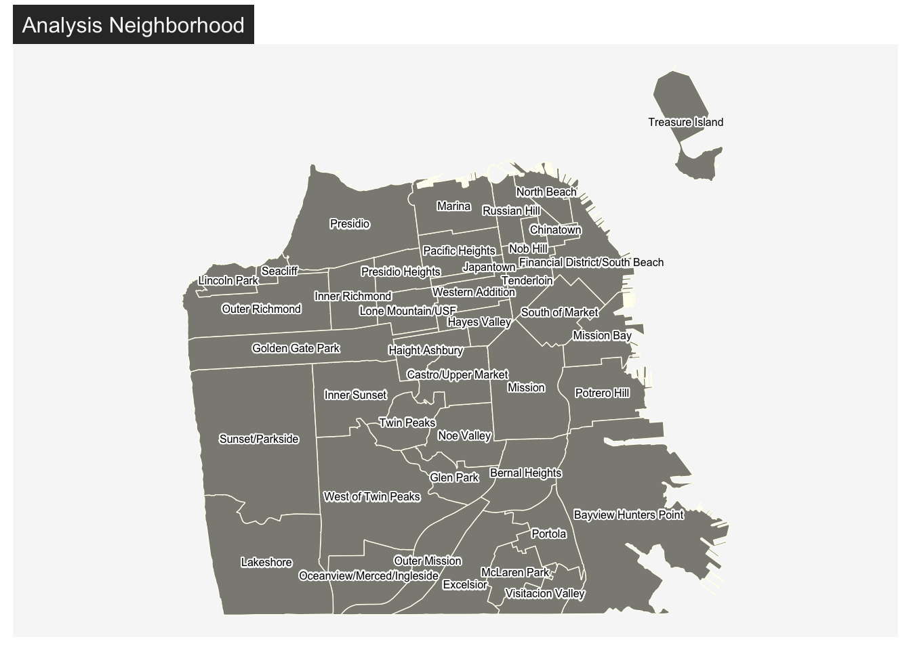
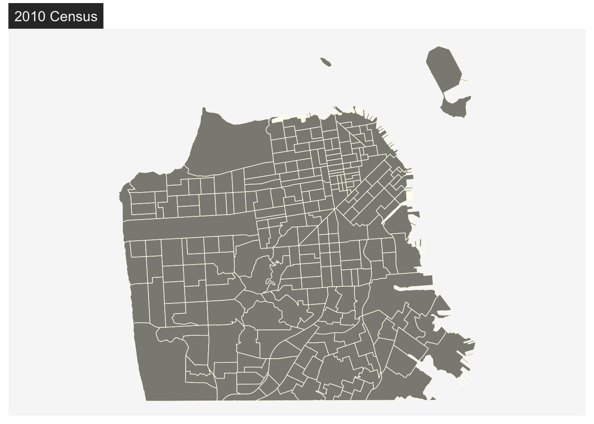

Chapter 2 Emplacing Demographic Data
In this chapter, we will discuss demographic data nested in places, which is often used in sociological research. Sociologists often study where people live and move to. Topics like migration, segregation, gentrification, integration/assimilation, and diversity/fractionalization can be studied using aggregated demographic data for a given geographic unit. To conduct such analysis, defining a geographic unit and boundary suitable for your research question is critical.
2.1 Defining a geographic unit (boundaries)
Geographic units can be defined and drawn at various levels, from nations to cities to neighborhoods. Territories are contested and (re)defined through social processes, therefore, it is important to clearly define and justify your choice of spatial boundary as a unit of analysis. Urban sociologists, for instance, tend to focus on studying neighborhood dynamics. But what are neighborhoods? While government-defined census tracts are often used as a proxy for neighborhoods in quantitative social science research, some scholars choose to analyze other types of boundaries, such as “community areas” that are more meaningful to its residents.
THE CASE OF SAN FRANCISCO
Let’s demonstrate the importance of defining a geographic unit using the case of San Francisco. San Francisco’s neighborhood names and boundaries have changed over time [1] and the current names and boundaries are often inconsistently perceived and administered [2].
Source: SFGATE
In this tutorial, I visualize San Francisco neighborhoods based on census tracts as well as the “Analysis Neighborhood” created by the city officials. Many US city governments provide their local data through Open Data websites, including San Francisco’s [DataSF] (https://datasf.org/opendata/). You want to look for “Geographic Locations & Boundaries” tab.
DataSF is an open data website provided by the city government of San Francisco
Here, you will find the 2010 census tract and “Analysis Neighborhood” boundaries, among many other geographic data.
- Geographic boundaries data can come in various formats, like geojson, shapefiles, etc.
- In this tutorial, we use geojson files. You can download all the data used in this class here.
- Geographic boundaries are “polygons”
- We use sf package in R to handle spatial data.
Set up and import geojson files.
# First, you will have to set up by installing and calling the sf package.
install.packages("sf") #install the package if you haven't.
library(sf)# Import neighborhood boundaries data (polygons)
sfnh <- st_read("tutorial/data/sfnh.geojson") # for "Analysis Neighborhood" boundaries
sftrt <- st_read("tutorial/data/sftrt_clean.geojson") # for census tractsYou can treat these sf objects as if they are data frames.
# Overview of variables
head(sfnh, 3)## Simple feature collection with 3 features and 1 field
## Geometry type: MULTIPOLYGON
## Dimension: XY
## Bounding box: xmin: -122.4761 ymin: 37.70833 xmax: -122.3983 ymax: 37.79037
## Geodetic CRS: WGS 84
## nhood geometry
## 1 Western Addition MULTIPOLYGON (((-122.4214 3...
## 2 West of Twin Peaks MULTIPOLYGON (((-122.461 37...
## 3 Visitacion Valley MULTIPOLYGON (((-122.4039 3...# Transform an sf object into a simple one data frame (without geometries)
sfnh_wo_geo <- st_drop_geometry(sfnh)
head(sfnh_wo_geo, 3)## nhood
## 1 Western Addition
## 2 West of Twin Peaks
## 3 Visitacion Valley# Displaying geometry only - compare how boundaries differ!
library(mapsf) # we will learn more about mapping in detail in the following tutorials.
mf_map(sfnh, col = "ivory4", border = "ivory")
mf_label(
x = sfnh,
var = "nhood",
col= "black",
halo = TRUE,
overlap = FALSE,
lines = FALSE,
cex = 0.5
) # display neighborhood names
mf_title(txt = "Analysis Neighborhood")
mf_map(sftrt, col = "ivory4", border = "ivory")
mf_title(txt = "2010 Census")
In my research, for example, I ask: How do Airbnb hosts use neighborhood names to market their properties? To answer this question, using census tract boundaries doesn’t really make sense because they don’t carry meanings. Rather, it would be more suitable to use boundaries such as Analysis Neighborhood.
THINK AND SHARE
- Are you interested in conducting spatial analysis on nations, cities, regions, or neighborhoods?
- What spatial questions do you have about them?
- How will you define their boundaries?
Want to learn more?
2.2 Joining Attributes
Geographic boundaries alone don’t tell us much about what is social about them. Sociologists, and social scientists more broadly, often are interested in people in these places. Therefore, matching aggregated demographic data with the geographic boundaries is a crucial next step.
We can merge a sf object with a data frame containing demographic attributes using the function merge(). Be careful with the order of the arguments, the returned object will be of the same type as x. It is not possible to do an attribute join using two sf objects.
# Import demographic attributes
sfdem <- read.csv("tutorial/data/sfdem.csv")
# Check common identifier
names(sfdem)## [1] "nhood" "tpop" "pyoung" "pcol" "minc" "mhval"
## [7] "mrent" "pwhite" "pblack" "pasian" "phisp" "tpop17"
## [13] "pyoung17" "pcol17" "minc17" "mhval17" "mrent17" "gentcat"
## [19] "pwhite17" "pblack17" "pasian17" "phisp17" # Yes, in both data sets, "nhood" exists.# Join attributes to geometry
sf_joined <- merge(
x = sfnh, # sf object
y = sfdem, # data frame
by.x = "nhood", # x identifier
by.y = "nhood", # y identifier
all.x = TRUE # keep all lines
)
# Check the joined data
head(sf_joined, 3)## Simple feature collection with 3 features and 22 fields
## Geometry type: MULTIPOLYGON
## Dimension: XY
## Bounding box: xmin: -122.4479 ymin: 37.70835 xmax: -122.357 ymax: 37.7696
## Geodetic CRS: WGS 84
## nhood tpop pyoung pcol minc mhval mrent
## 1 Bayview Hunters Point 34834.88 25.11909 13.09727 68944.42 383179.6 948.6696
## 2 Bernal Heights 24952.09 29.74500 39.13500 95689.95 537924.0 1449.2704
## 3 Castro/Upper Market 20037.68 35.27500 63.81000 109990.94 872713.1 1613.5698
## pwhite pblack pasian phisp tpop17 pyoung17 pcol17 minc17
## 1 5.657989 45.322281 26.27249 16.296813 37917 24.14091 29.18273 63772.3
## 2 38.517951 6.560709 16.87636 33.360004 25167 21.51000 58.98167 139612.5
## 3 77.062002 2.860599 7.25898 9.031316 22502 30.88167 78.36000 159149.2
## mhval17 mrent17 gentcat pwhite17 pblack17 pasian17 phisp17
## 1 737920 1402.455 non-gentrifying 7.962128 25.289448 38.64493 23.443310
## 2 1184217 1877.667 nongentable-ascending 47.709302 4.072794 17.05805 26.276473
## 3 1323100 2225.833 nongentable-ascending 68.896098 3.146387 14.38983 8.030397
## geometry
## 1 MULTIPOLYGON (((-122.3816 3...
## 2 MULTIPOLYGON (((-122.4036 3...
## 3 MULTIPOLYGON (((-122.4266 3...Now, we are able to explore neighborhood-level characteristics.
# Select rows
sf_joined[1:2,]## Simple feature collection with 2 features and 22 fields
## Geometry type: MULTIPOLYGON
## Dimension: XY
## Bounding box: xmin: -122.4286 ymin: 37.70835 xmax: -122.357 ymax: 37.75319
## Geodetic CRS: WGS 84
## nhood tpop pyoung pcol minc mhval mrent
## 1 Bayview Hunters Point 34834.88 25.11909 13.09727 68944.42 383179.6 948.6696
## 2 Bernal Heights 24952.09 29.74500 39.13500 95689.95 537924.0 1449.2704
## pwhite pblack pasian phisp tpop17 pyoung17 pcol17 minc17
## 1 5.657989 45.322281 26.27249 16.29681 37917 24.14091 29.18273 63772.3
## 2 38.517951 6.560709 16.87636 33.36000 25167 21.51000 58.98167 139612.5
## mhval17 mrent17 gentcat pwhite17 pblack17 pasian17 phisp17
## 1 737920 1402.455 non-gentrifying 7.962128 25.289448 38.64493 23.44331
## 2 1184217 1877.667 nongentable-ascending 47.709302 4.072794 17.05805 26.27647
## geometry
## 1 MULTIPOLYGON (((-122.3816 3...
## 2 MULTIPOLYGON (((-122.4036 3...# Select columns
sf_joined[, "tpop"]## Simple feature collection with 41 features and 1 field
## Geometry type: MULTIPOLYGON
## Dimension: XY
## Bounding box: xmin: -122.5149 ymin: 37.70813 xmax: -122.357 ymax: 37.8333
## Geodetic CRS: WGS 84
## First 10 features:
## tpop geometry
## 1 34834.88 MULTIPOLYGON (((-122.3816 3...
## 2 24952.09 MULTIPOLYGON (((-122.4036 3...
## 3 20037.68 MULTIPOLYGON (((-122.4266 3...
## 4 14360.00 MULTIPOLYGON (((-122.4062 3...
## 5 37063.83 MULTIPOLYGON (((-122.424 37...
## 6 9929.22 MULTIPOLYGON (((-122.3875 3...
## 7 8053.00 MULTIPOLYGON (((-122.4474 3...
## 8 137.00 MULTIPOLYGON (((-122.4409 3...
## 9 17009.00 MULTIPOLYGON (((-122.432 37...
## 10 16915.00 MULTIPOLYGON (((-122.4208 3...# Filter
sf_joined[sf_joined$nhood == "Mission", ]## Simple feature collection with 1 feature and 22 fields
## Geometry type: MULTIPOLYGON
## Dimension: XY
## Bounding box: xmin: -122.4269 ymin: 37.74783 xmax: -122.403 ymax: 37.77564
## Geodetic CRS: WGS 84
## nhood tpop pyoung pcol minc mhval mrent pwhite
## 19 Mission 60202.03 39.93308 33.86769 76201.05 634583.3 1267.62 32.5255
## pblack pasian phisp tpop17 pyoung17 pcol17 minc17 mhval17
## 19 2.973325 11.01126 50.07308 58770 34.39923 57.20385 125000.2 1106315
## mrent17 gentcat pwhite17 pblack17 pasian17 phisp17
## 19 1870.846 gentrifying 41.09069 3.660031 14.46827 35.66786
## geometry
## 19 MULTIPOLYGON (((-122.411 37...# Filter and select
sf_joined[sf_joined$nhood == "Mission", "phisp17"]## Simple feature collection with 1 feature and 1 field
## Geometry type: MULTIPOLYGON
## Dimension: XY
## Bounding box: xmin: -122.4269 ymin: 37.74783 xmax: -122.403 ymax: 37.77564
## Geodetic CRS: WGS 84
## phisp17 geometry
## 19 35.66786 MULTIPOLYGON (((-122.411 37...THINK AND SHARE
Below, you see two maps displaying Chicago ans Seattle.

- What are the geographic boundaries used in this figure?
- What attribute is displayed in the map?
- Is this attribute quantitative or qualitative?
2.3 Data Visualization
With spatial data merged with demographic attributes, we can create demographic measures of interest. Here, I introduce three key measures used in urban scholarship: gentrification and diversity.